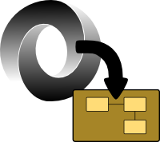
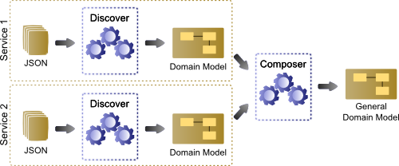

JSON discoverer
Discover domain models from JSON files
How it works?

The following figure illustrates the process applied in the advance JSON discoverer.
- Step 1. Provision. You can provide one or more JSON sources. For each source, you can provide one ore more examples.
- Step 2. Discovery and Composition. For each JSON source we will discover the domain and then they are composed to get a general domain model. In this step we will give you a class diagram representing the overall domain defined by the set of JSON definitions.
Try it out!
Name:
{{jsonDef.name}}
JSONs provided:
{{jsonDef.jsonDefs.length}}